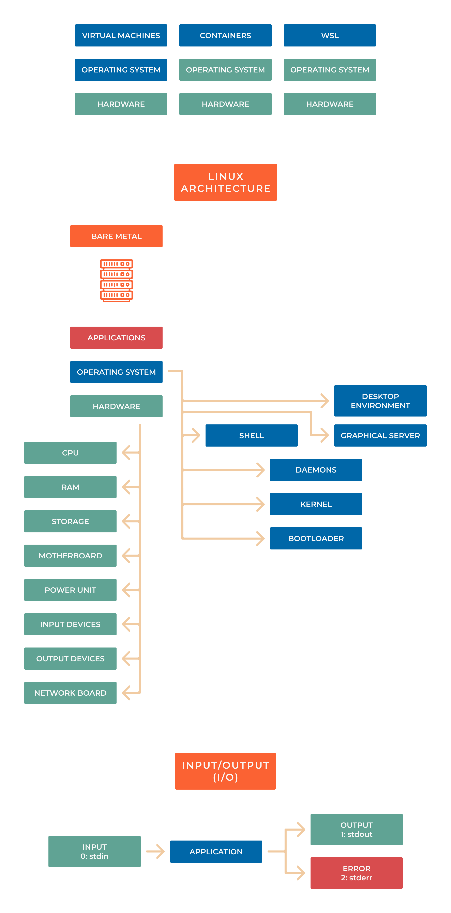

1.4 Introduction to Linux
Note
Linux is a community of open-source Unix-like operating systems that are based on the Linux Kernel. It was initially released by Linus Torvalds on September 17, 1991. It is a free and open-source operating system and the source code can be modified and distributed to anyone commercially or noncommercially under the GNU General Public License.
Initially, Linux was created for personal computers and gradually it was used in other machines like servers, mainframe computers, supercomputers, etc. Nowadays, Linux is also used in embedded systems like routers, automation controls, televisions, digital video recorders, video game consoles, smartwatches, etc. The biggest success of Linux is Android(operating system) it is based on the Linux kernel that is running on smartphones and tablets. Due to Android, Linux has the largest installed base of all general-purpose operating systems. Linux is generally packaged in a Linux distribution.
How Linux Works
Linux works by managing system resources, such as CPU, memory, and storage, and providing a platform for users to interact with the system using a command line interface or graphical user interface.
Uses a hierarchical file system, where files and directories are organized in a tree structure starting from the root directory. The Linux kernel, which is the core component of the operating system, is responsible for managing system resources and providing a bridge between applications and hardware.
Users can interact with the system by executing commands in a terminal or using graphical user interface applications. The system also supports multiple users and permissions, allowing users to access and modify files in the file system according to their assigned permissions.
Additionally, Linux has a large repository of open-source software and tools that can be easily installed and configured, making it a highly flexible and customizable operating system. Overall, Linux works by providing a robust and efficient platform for users to run applications, manage files and system resources, and interact with the system.
Components

The Bootloader - The software that manages the boot process of your computer. For most users, this will simply be a splash screen that pops up and eventually goes away to boot into the operating system
The kernel - This is the one piece of the whole that is called “Linux”. The kernel is the core of the system and manages the CPU, memory, and peripheral devices. The kernel is the “lowest” level of the OS. The Linux kernel is a set of drivers that are written to allow your hardware to talk to each other and to allow your software to talk to the hardware, you can think of the kernel as a translator between all components in your system. The Linux kernel was originally developed by Linux Torvalds in 1991 and is still developed by him and a group of talented developers. The Linux kernel is currently built by many hobbyist developers and commercial developers from various organizations worldwide. The current leadership development (and this website) is funded by the Linux Foundation, The Linux Foundation’s members are individual companies that widely use Linux-based systems and fund much of the current development and hosting necessary to keep the Linux kernel and related programs active.
Daemons - These are background services, network, sound, scheduling, etc, that either start up during boot or after you log into the desktop
The Shell - You have probably heard mention of the Linux command line. This is the shell - a command process that allows you to control the computer via commands typed into a text interface.
Graphical Server - This is the sub-system that displays the graphics on your monitor. It is commonly referred to as the X server or just “X”
Desktop Environment - This is the piece of the puzzle that the users interact with. There are many desktop environments to choose from (Unity, GNOME, Cinnamon, Enlightenment, KDE, XFCE, etc). Each desktop environment includes built-in applications (such as file managers, configuration tools, web browsers, games, etc)
Applications - Desktop environments do not offer the full array of apps. Just like Windows and Mac, Linux offers thousands upon thousands of high-quality software titles that can be easily found and installed. Most modern Linux distributions (more on this in a moment) include App Store-like tools that centralize and simplify application installation.
{kind=link}
Linux Distributions
A Linux distribution is a set of software such as core libraries, Window Managers, Server daemon processes, and user-based applications. The specific sets of software that are included in a Linux-based distribution are decided by the distribution maintainers based on their goals, their goal distribution may be security-oriented, user-friendly, server-based, mobile phone-based, etc.

For more information go to List of Linux distributions
Terminal Emulator
Note
A terminal emulator is a program that allows the use of the terminal in a graphical environment. As most people use an OS with a graphical user interface (GUI) for their day-to-day computing needs, the use of a terminal emulator is a necessity for most Linux server users.
Commonly-used terminal emulators by operating systems:
Mac OS X: Terminal (default), iTerm 2
Windows: MobaXTerm, VS Code Terminal, Windows Terminal, PuTTy
Linux: Gnome Terminal, Konsole, XTerm
The Shell
In a Linux system, the shell is a command-line interface that interprets a user’s commands and script files and tells the server’s operating system what to do with them.
We will use the Bourne-Again shell (bash).
linux_user@linux_machine:/$ sudo su
root@linux_machine:/#
# The **“@” **symbol is used to divide the login user i.e. ``linux_user`` and the hostname i.e. ``linux_machine``.
# The **“:” **symbol (colon) is used to separate the ``linux_machine`` as a hostname from the current login or working directory.
# The **“$”** symbol will represent that it is a normal user, and does not have superuser rights. The login user is not a superuser.
# The **“#”** symbol will represent that it is a superuser, and it is having all the superuser rights.